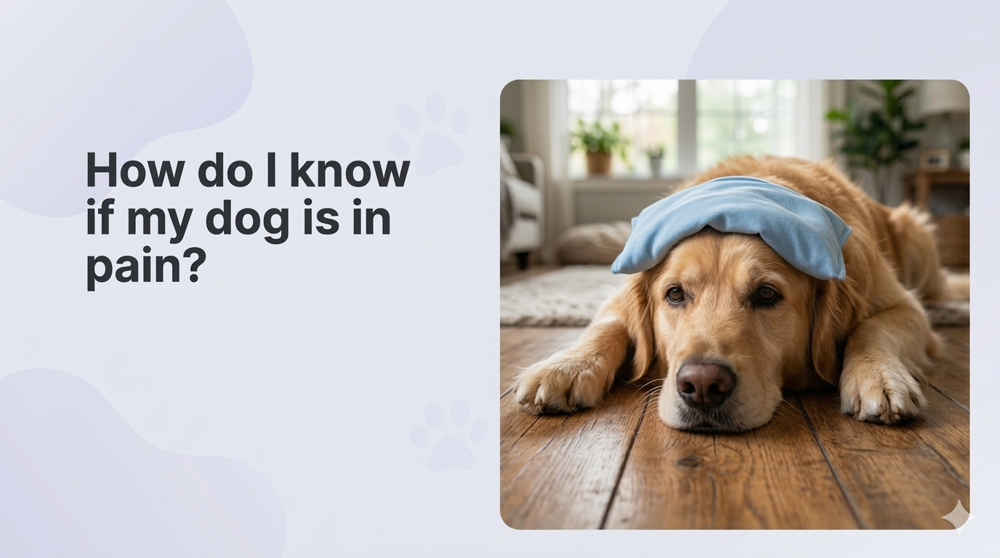

PainSense.ai
An AI-powered platform that helps dog owners objectively detect and track their pet's pain using computer vision and validated veterinary scoring - built at the Cornell Animal Health Hackathon.
View Live PrototypeContext
Animal Health Hackathon
Role
Product Strategy & Research
Team
6 Members
Tech
CNN · CV · LLM
Category
AI · HealthTech
The Problem
1 in 5
dogs live with chronic pain - often undetected by owners.
$160B
US pet market, with dogs representing ~55% (~$90 billion of TAM).
0
objective tools for owners to answer: "Is my dog in pain right now?"
Existing veterinary pain scoring systems (like the CBPI) are subjective, infrequent, and require a vet visit. Pet owners are left guessing - often missing early signs of chronic pain until it's severe.
What is PainSense.ai?
PainSense.ai is an AI-powered mobile app that lets dog owners upload short videos of their pet's daily activities - walking, eating, sleeping, playing - and receive an objective, continuous pain score from 0 to 10, validated against clinical veterinary standards.
Computer Vision Model
AI interpretation of submitted videos via the pet owner, eliminating the subjectivity of previous pain scoring systems. Analyses posture, gait, facial cues, and behavioral patterns.
AI-Assisted Questionnaire
Weekly questionnaire derived from existing validated Canine pain scoring systems (CBPI). AI pre-fills answers from video analysis - the owner can review and adjust.
System Architecture - Two-Stream Deep Neural Network
The core AI engine processes dog videos through a dual-stream convolutional neural network, fusing visual appearance and motion data to produce a clinically meaningful pain score.
Input Layer
Dog video submitted by owner
(walking, sleeping, eating, running)
Calibration step establishes baseline behavior
Stream 1: RGB
CNN detects facial cues, posture shape, and visual discomfort
Appearance Stream
Stream 2: Motion
Pose estimation CNN collects movement patterns and keypoints
Keypoint Stream
Output
Final averaged pain score (0–10) with Mobility + Behavioral sub-scores
CBPI-Validated
Secondary fallback: In the event of poor video quality, an LLM generates a text prompt as the input layer to the CNN.
Research source: Zhu, Hongyi et al. "Video-based Estimation of Pain Indicators in Dogs." arXiv, Sept. 2022.
App Screens
A dark-mode mobile interface designed for clarity and ease during emotionally sensitive moments. Key screens below - or explore the live prototype ↗

DashboardScreenshot
Pain Dashboard

How It Works

Profile & Pets

Video Upload
Real-time Pain Score
Continuous 0–10 rating with severity label (Normal / Mild / Moderate / Severe)
Pain Analytics Timeline
Track pain trends: All Time, Pre Surgery, Post Surgery, On Medication
AI Summary
Natural-language weekly health summary generated from analysis data
Anomaly Alerts
Push notifications when unusual pain patterns are detected
Multi-Pet Profiles
Support for multiple dogs with individual calibration baselines
Video Gallery
History of analyzed videos tagged by activity (running, eating, walking…)
Subscription Plans
For first-time users & single-dog households
$10.99 / month
or $99.99 / year
For multi-dog households - unlimited pet profiles
$20.99 / month
or $179.99 / year
Business Strategy
What pet owners gain
- ▸Peace of mind - know your dog's pain status anytime
- ▸Track pain management effectiveness over time
- ▸Early detection before pain becomes severe
- ▸Better, data-backed decisions for vet visits
What the business gains
- ▸Proprietary data for model improvement
- ▸Scalable SaaS growth with low marginal cost
- ▸Rapid market penetration through referral loops
- ▸Strong pathway to B2B expansion (vet clinics, hospitals)
GTM Strategy
Early Adopters
Pet owners through targeted digital marketing, focusing on dogs (~55% of TAM)
Vet School Partnerships
Strategic partnerships with veterinary schools for validation and early distribution
GP Vet Recommendations
General practice vets recommending PainSense to clients post-consultation
Pilot Program
Pilot with small-scale veterinary practices to gather model training data
Influencer Marketing
Performance marketing on social media through pet influencer testimonials
Referral Program
Invite 1 friend → get 1 free month; viral loop built into the product
Product Timeline
V1 App Launch - Dogs, CV-Only
Prove product–market fit with dog pain detection and establish recurring subscription revenue.
V2 - Multispecies + Wearables
Move from "app" to "platform" - go multimodal (video + sensor) and expand to cats, horses, and other species.
Animal Health Infrastructure
Become embedded infrastructure inside animal hospitals, veterinary clinics, and broader animal health platforms.
My Role
As a member of The Pawject Managers team - alongside Snehal Bakre, Amanda Claas, Neel Kanjani, Clara Manley, and Harshit Sharma - I contributed across product strategy and business design:
- ▸Defined the product concept and problem framing (pain gap in pet care)
- ▸Shaped the go-to-market strategy and subscription model design
- ▸Contributed to the business strategy and revenue model
- ▸Helped prototype and validate the app flow and user experience
- ▸Contributed to the investor-facing pitch deck and roadmap
Technologies
Live Demo
Try PainSense.ai
Explore the working prototype - upload a video and see the AI pain scoring in action.
Open Prototype